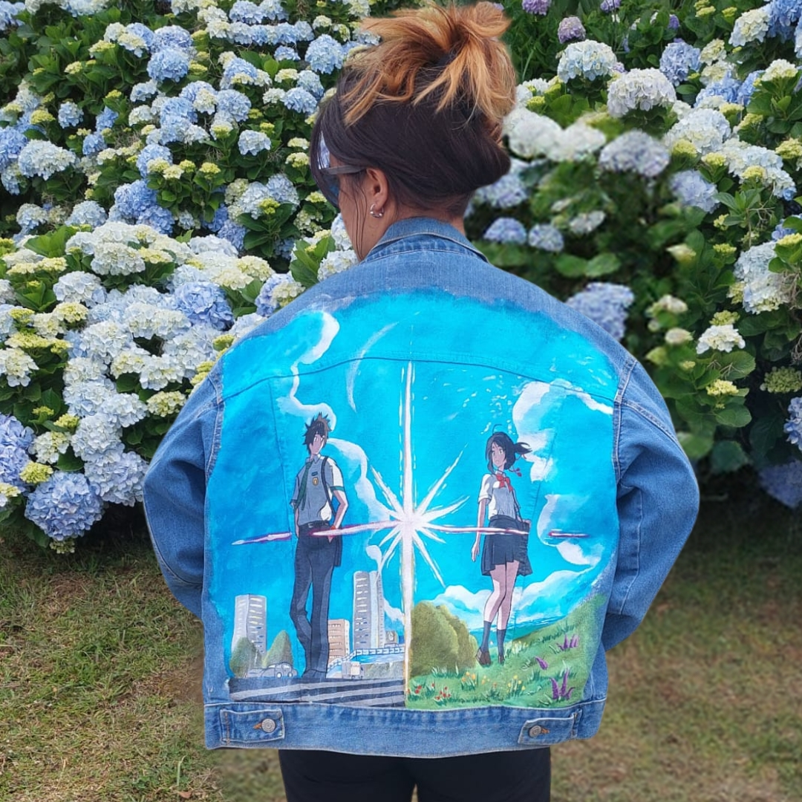
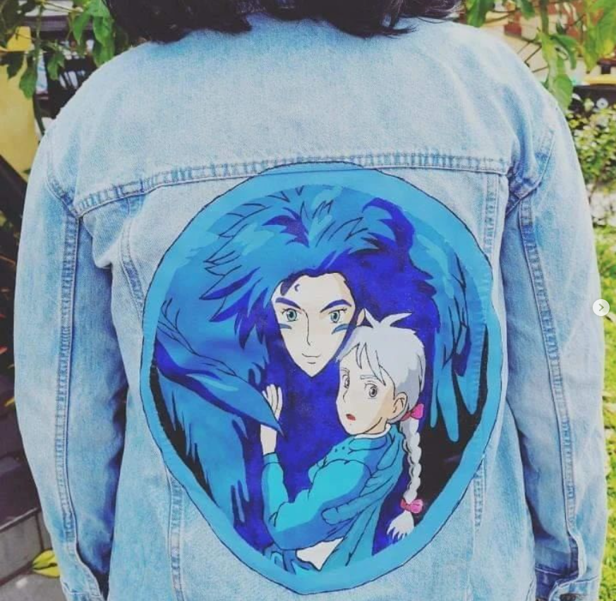
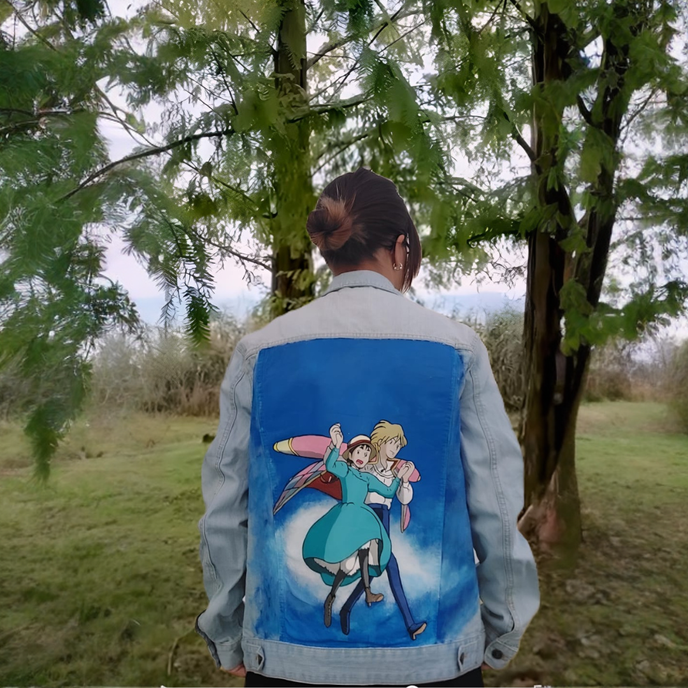

Ikigai by IA
Pintura de Anime em Casacos de Ganga

Outros Trabalhos




O que dizem os nossos clientes

Margarida Costa
"Era para dizer que o casaco já chegou!! Amei imenso, achei que ficou perfeito"

Joana Silva
"Desculpa, nem consigo expressar o que estou a sentir... O HOODIE ESTÁ INCRÍVEL!!"

Leonor Almeida
"Melhor decisão que tomei na vida! Está linda! Ainda mais perfeita ao vivo do que nas fotos!"
Sobre a Arte em Ganga
A pintura em casacos de ganga é uma forma de expressão artística que combina a cultura pop dos animes com a moda urbana. Cada peça é única e pintada manualmente com tintas especiais para tecido, garantindo durabilidade e qualidade.
Os personagens de anime ganham vida nas costas de casacos de ganga, criando peças exclusivas que refletem a personalidade de quem as veste. Desde Naruto até Totoro, passando por Attack on Titan e One Piece, há um mundo de possibilidades para personalizar a sua roupa.